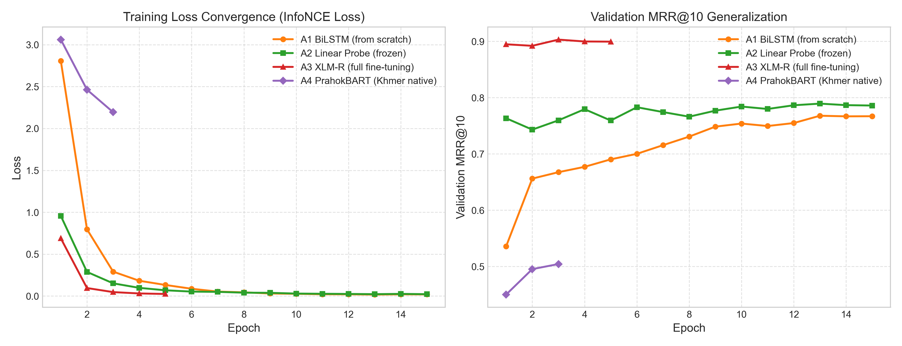
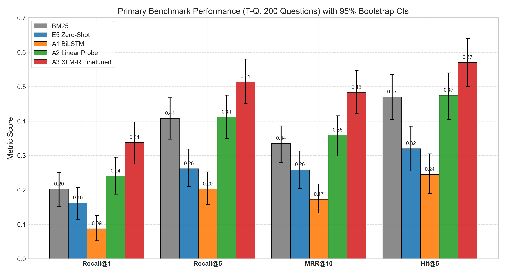

Core Research Question & Verdict: When retrieving official statutory articles for conversational citizen queries, does multilingual transfer learning outperform from-scratch and monolingual models?
Key Finding: Full fine-tuning of XLM-R (A3) is the decisive champion (0.4827 MRR@10, 51.42% Recall@5, +44.1% over BM25, \(p=0.0001\)). A frozen linear probe (A2) matches BM25 in 5.9s on CPU. Native Khmer PrahokBART (A4) excels at formal titles (80.4% Hit@5) but drops on conversational queries.
AUTHOR
Mengchheang Long
EVALUATION CORPUS
Cambodian Civil Code (2007) & Criminal Code (2009)
SCALE & BENCHMARKS
1,976 Articles | 200 Human Questions | 148 Held-Out Titles
Query: "តើកិច្ចសន្យាបង្កើតឡើងដោយរបៀបណា?" (How is a contract formed?)
Target: Civil Code Art. 315 ("ការបង្កើតកិច្ចសន្យា")
Official PDFs from Open Development Cambodia (ODC) use legacy 8-bit Limon fonts (`Limon S1`, `Limon R1`):
maRta 336>- → visual មាត្រា ៣៣៦.-
Tokenizer: khmer-nltk CRF word segmentation.
Params: 0
Training: 0 s
Fast keyword matching; fails on colloquial synonyms.
Architecture: Random embeddings + 2-layer BiLSTM + mean pooling.
Params: 1.97M (all trainable)
Training: 2,035 s (CPU)
Tests learning Khmer legal semantics without pre-training.
A2 Probe: Frozen backbone + 768→768 linear head (0.59M weights, 5.9 s training).
A3 Fine-Tune: Full end-to-end backprop across 278M params (7,237 s CPU / 320 s T4).
Multilingual pre-training prior.
Architecture: Khmer BART encoder + native SentencePiece (32k vocab).
Params: 35.83M (~8x smaller than XLM-R).
Training: 1,602 s (CPU)
Tests compact Khmer-native pre-training vs multilingual giants.
Tokenization Comparison: A1 & BM25 use CRF word segmentation (khmer-nltk, 2,544 vocab), whereas A2 & A3 use 250k multilingual subwords, and A4 uses 32k Khmer SentencePiece subwords.

A1 Overfitting: Train loss plunged to 0.017 while val loss stalled at 0.86. From-scratch models cannot learn general semantic manifolds from 1.1k pairs.
A2 vs A3: A2's frozen backbone completely prevents overfitting; A3 fine-tuning achieves smooth convergence with warmup.
Evaluated on the full 1,976-article corpus with 95% bootstrap confidence intervals (\(B=1,000\)):
| Rank | Model / Approach | Params | Recall@1 [95% CI] | Recall@5 [95% CI] | MRR@10 [95% CI] | Hit@5 |
|---|---|---|---|---|---|---|
| 🥇 | A3: XLM-R Full Fine-Tune | 278.04 M | 0.3375 [0.28, 0.40] | 0.5142 [0.45, 0.58] | 0.4827 [0.42, 0.55] | 57.0% |
| 🥈 | A2: XLM-R Linear Probe | 0.59 M | 0.2400 [0.19, 0.30] | 0.4117 [0.35, 0.48] | 0.3591 [0.30, 0.42] | 47.5% |
| 🥉 | BM25 Baseline (Lexical) | 0 | 0.2025 [0.15, 0.25] | 0.4075 [0.35, 0.47] | 0.3350 [0.28, 0.39] | 47.0% |
| 4 | Multilingual-E5 (Zero-Shot) | 278.04 M | 0.1625 [0.12, 0.21] | 0.2617 [0.21, 0.32] | 0.2588 [0.20, 0.31] | 32.0% |
| 5 | A1: BiLSTM (From Scratch) | 1.97 M | 0.0875 [0.05, 0.13] | 0.2025 [0.16, 0.25] | 0.1724 [0.13, 0.22] | 24.5% |
| 6 | A4: PrahokBART (Khmer Native) | 35.83 M | 0.0525 [0.03, 0.09] | 0.1517 [0.11, 0.20] | 0.1035 [0.07, 0.14] | 18.0% |
Undisputed Winner (A3): Outperforms BM25 by +44.1% relative MRR@10 and +86.5% over zero-shot E5. Dense fine-tuning bridges the colloquial phrasing gap.
Linear Probe Efficiency (A2): Matches BM25 (0.3591 vs 0.3350 MRR) with only 0.59M weights trained in 5.9 seconds, unlocking low-compute deployment.

Primary metrics across 6 systems with 95% bootstrap error bars.
| Comparison | Metric | Mean Diff (\(\Delta\)) [95% CI] | \(p\)-value | Sig. |
|---|---|---|---|---|
| A3 vs BM25 | Recall@5 | +0.1067 [+0.050, +0.163] | 0.0002 | *** |
| A3 vs BM25 | MRR@10 | +0.1477 [+0.096, +0.199] | 0.0001 | *** |
| A3 vs E5 Zero | MRR@10 | +0.2239 [+0.168, +0.280] | 0.0001 | *** |
| A3 vs A4 (BART) | MRR@10 | +0.3792 [+0.320, +0.440] | 0.0001 | *** |
| A2 vs BM25 | Recall@5 | +0.0042 [-0.057, +0.063] | 0.9031 | n.s. |
Scientific Proof: Paired testing eliminates inter-query variance. A3 beats BM25 in 72 queries vs 25 losses (\(p=0.0001\)). A2 achieves statistical parity with BM25 (\(p=0.9031\)).
| Model | T-T (148 Titles) Recall@5 | T-Q (200 Questions) Recall@5 | Generalization Shift |
|---|---|---|---|
| A3: Full Fine-Tune | 99.3% | 51.4% | -47.9% |
| BM25 Baseline | 97.3% | 40.8% | -56.5% |
| A2: Linear Probe | 93.9% | 41.2% | -52.7% |
| A4: PrahokBART | 80.4% | 15.2% | -65.2% |
| A1: BiLSTM (Scratch) | 75.7% | 20.3% | -55.4% |
| E5 Zero-Shot | 72.3% | 26.2% | -46.1% |
Course Concept: Evaluating only on held-out titles (T-T) creates an illusion of mastery (~99%). Evaluating on conversational queries (T-Q) exposes real distribution shift!
| Failure Category | BM25 (106) | A1 (151) | A3 (86) | Impact in A3 |
|---|---|---|---|---|
| Vocabulary Mismatch | 61 (57.5%) | 79 (52.3%) | 52 (60.5%) | -14.8% count |
| Code Confusion | 4 (3.8%) | 13 (8.6%) | 1 (1.2%) | Nearly zero! |
| Multi-Article | 26 (24.5%) | 37 (24.5%) | 15 (17.4%) | Spans remedies |
| Near-Miss (Rank 6-10) | 15 (14.2%) | 19 (12.6%) | 17 (19.8%) | Target in top-10 |
Code Distinction: A3 made only 1 single Civil/Criminal cross-code confusion across all 200 questions (0.5% rate vs 8.6% in BiLSTM).
Query: "តើការចាប់មនុស្សបង្ខាំងទុកដោយខុសច្បាប់មានទោសអ្វី?" (Unlawful kidnapping)
Target: Criminal Code Art. 253 ("ការចាប់ ការឃុំឃាំង និងការបង្ខាំងមនុស្សដោយខុសច្បាប់")
• BM25: Miss (> Rank 50) — misses colloquial phrasing.
• A3 Fine-Tune: Rank 1 (Hit) — maps directly to the kidnapping chapter!
Query: "ប្រសិនបើអ្នកលក់មិនព្រមប្រគល់ទំនិញ តើអ្នកទិញអាចទាមទារអ្វីបាន?" (Seller default)
Retrieved by A3: Art. 387 (Demand performance) & Art. 398 (Damages).
Both are legally authentic remedies; highlights need for multi-passage RAG.
Strict citation verification ensures every referenced statute and article number is validated against retrieved passages before display.
| Model | Recall@1 | Recall@5 | MRR@10 | Hit@5 |
|---|---|---|---|---|
| A3: XLM-R Fine-Tune | 0.9054 | 0.9932 | 0.9456 | 99.3% |
| BM25 Baseline | 0.7973 | 0.9730 | 0.8677 | 97.3% |
| A2: XLM-R Linear Probe | 0.7905 | 0.9392 | 0.8563 | 93.9% |
| A4: PrahokBART (Khmer) | 0.5946 | 0.8041 | 0.6733 | 80.4% |
| A1: BiLSTM (Scratch) | 0.5135 | 0.7568 | 0.6242 | 75.7% |
| E5-Base Zero-Shot | 0.5405 | 0.7230 | 0.6235 | 72.3% |
| Approach | Total Params | Trainable | Training Time | Hardware |
|---|---|---|---|---|
| BM25 Baseline | 0 | 0 | 0 s | CPU |
| E5 Zero-Shot | 278.04 M | 0 | 0 s | CPU |
| A1 BiLSTM | 1.97 M | 1.97 M | 2,035.3 s | CPU |
| A2 Linear Probe | 278.63 M | 0.59 M | 5.9 s | CPU |
| A3 Fine-Tune | 278.04 M | 278.04 M | 7,237.5 s / 320 s | CPU / T4 |
| A4 PrahokBART | 35.83 M | 35.83 M | 1,602.2 s | CPU |
| Model | Grid Search Parameters | Best Hyperparameters | Val MRR |
|---|---|---|---|
| A1 | Hidden \(\{128, 256\}\) × LR \(\{1\text{e-}3, 3\text{e-}3\}\) × Drop \(\{0.1, 0.3\}\) | Hidden 128, LR 1e-3, Drop 0.3 | 0.1706 |
| A2 | LR \(\{1\text{e-}3, 1\text{e-}2\}\) × Weight Decay \(\{0.0, 0.01\}\) | LR 1e-3, Weight Decay 0.01 | 0.3444 |
| A3 | LR \(\{1\text{e-}5, 2\text{e-}5\}\) × Weight Decay \(\{0.0, 0.01\}\) | LR 2e-5, Weight Decay 0.01 | 0.4285 |
| A4 | LR \(\{5\text{e-}5, 1\text{e-}4\}\) × Weight Decay \(\{0.01\}\) | LR 5e-5, Weight Decay 0.01 | 0.2878 |